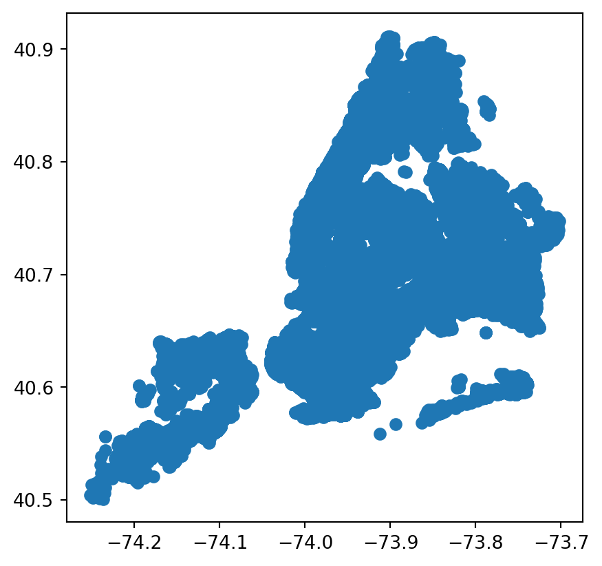
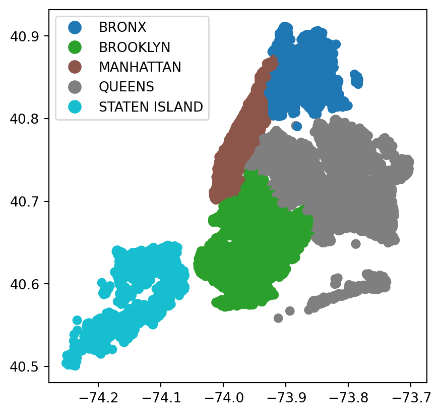
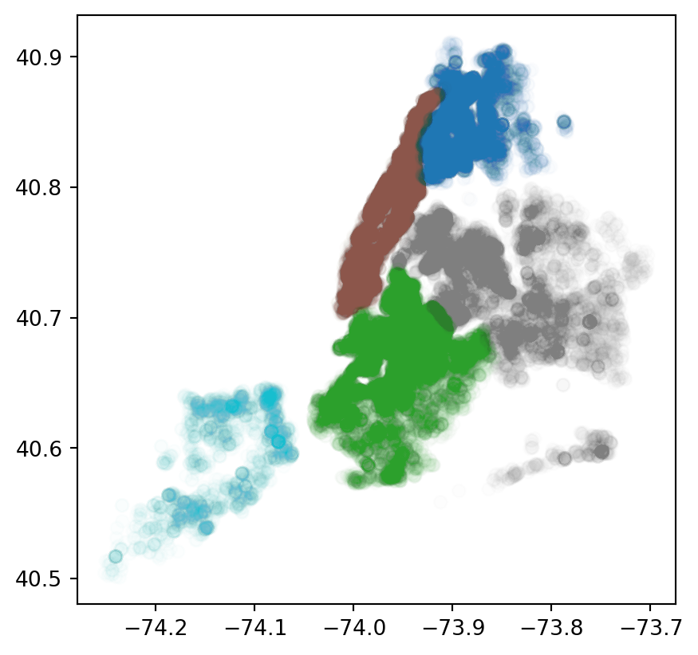
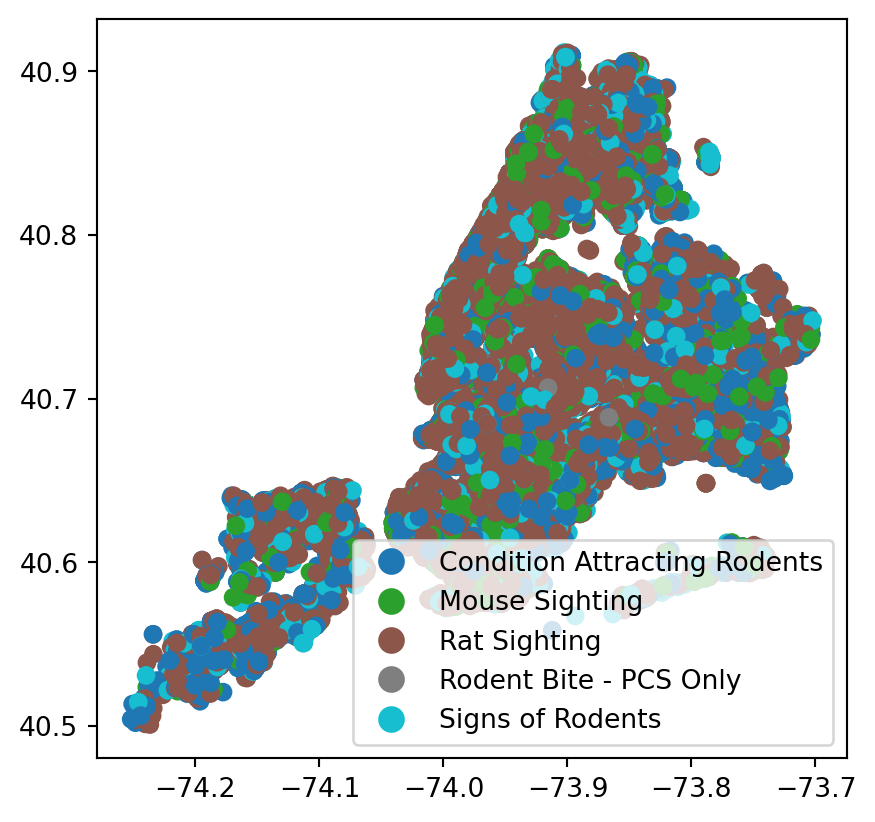
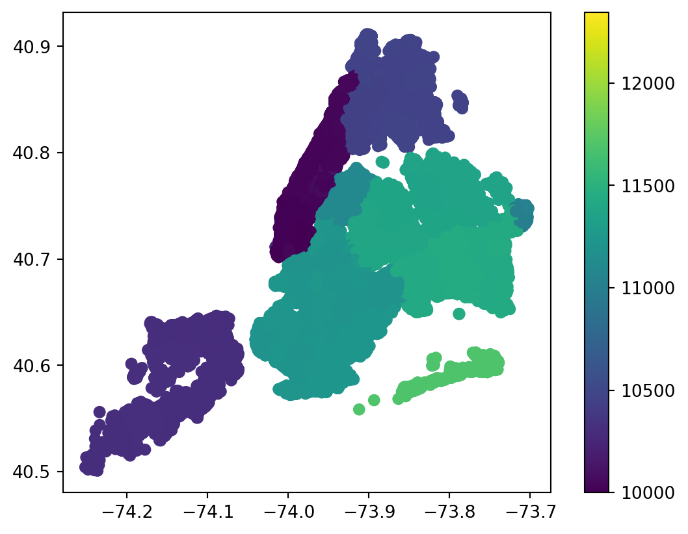
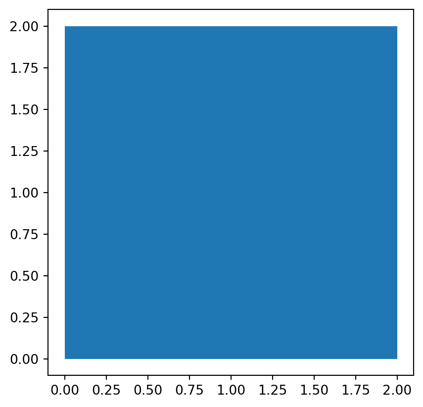

from shapely.geometry import Point, LineString, Polygon
import geopandas as gpd
point = Point(0, 1)
gdf1 = gpd.GeoDataFrame(geometry=[point])
line = LineString([(0, 0), (1, 1)])
gdf2 = gpd.GeoDataFrame(geometry=[line])
#note: the first and last element of
#the list of tupled points are the same
polygon = Polygon([(0, 0), (0, 2), (2, 2), (2, 0), (0, 0)])
gdf3 = gpd.GeoDataFrame(geometry=[polygon])9 Handling Spatial Data with GeoPandas
This section was written by Pratham Patel.
9.0.1 Introduction and Installation
Hello! my name is Pratham Patel and I am a Senior due to graduate this semster with a Bachelor’s Degree of Science in Mathematics/Statistics with a Computer Science minor. I hope to gain skills in using various different packages of Python in this course, as well as understand even more about the Data Science field. An example of learning new Python packages is the topic I will present today on the geopandas package. GeoPandas is an extension of the pandas package to support geographic data in its dataframes.
The GeoPandas package can be installed via the terminal using any of the following commands.
The documentation recommends: conda install -c conda-forge geopandas
Standard conda install: conda install geopandas
Using pip: pip install geopandas
9.0.2 Base Concepts
GeoPandas relvolves around the GeoDataFrame object, which is essentially the pandas DataFrame object, with all the traditional capabilities in addition to the ability store and operate on geometry columns.
The geometry types include points, lines and closed polygons (the first and last coordinates in the list must be the same).
The objects made by shapely.geometry can represent these geometry types:
gdf1| geometry | |
|---|---|
| 0 | POINT (0.00000 1.00000) |
Some of the basic attributes of a GeoSeries include: * length: returns length of a line
gdf2.length0 1.414214
dtype: float64area: returns the area of the polygon
gdf3.area0 4.0
dtype: float64bounds: gives the bounds of each row in a column of geometrytotal_bounds: gives the bounds of a geometry seriesgeom_type: returns geometry type
gdf1.geom_type0 Point
dtype: objectis_valid: return True for valid geometries and false otherwise (mostly important for polygons).
gdf3.is_valid0 True
dtype: boolNext, we will cover various methods to be used on GeoSeries objects:
distance(): returns the Series with the minimum distance from each entry to another geometry or Series (argumentother).- Note: a secondary argument
alignis a boolean to align the GeoSeries by index if set to True
- Note: a secondary argument
gdf2.distance(Point((1,0)))
gdf2.distance(LineString([(0, 2), (1, 2)]))0 1.0
dtype: float64centroid: returns a new GeoSeries with the center of each row’s geometry.
gdf3.centroid0 POINT (1.00000 1.00000)
dtype: geometrycontains(): returns True if the shape contains a specific geometry or Series.- parameters
otherandalign
- parameters
gdf3.contains(Point((0.5, 1.5)))0 True
dtype: boolgdf3.contains(gdf1)0 False
dtype: boolintersects()returns true if shape intersects another geometry of series- parameters
otherandalign
- parameters
9.0.3 Reading Files into GeoDataFrame’s
The function geopandas.read_file() is the best way to read a file with both data and geometry into a GeoDataFrame object. From here, we will be using the nyc rodent data and visualize it. The code below converts every incident’s location into a point on the geometry.
# Reading csv file
import pandas as pd
import numpy as np
# Shapely for converting latitude/longtitude to a point
from shapely.geometry import Point
# To create GeoDataFrame
import geopandas as gpd
#read in the feather file as a generic pandas DataFrame
rat_22_23 = pd.read_feather('data/rodent_2022-2023.feather')
# creating geometry using shapely (removing missing points) for the already built in longitude and latitude coordinates
geometry = [Point(xy) for xy in zip(rat_22_23["longitude"], rat_22_23["latitude"]) if not Point(xy).is_empty]
# creating geometry column to be used by geopandas using the points_from_xy method
geo = gpd.points_from_xy(rat_22_23["longitude"], rat_22_23["latitude"])
# coordinate reference system (epsg:4326 implies geographic coordinates)
crs = {'init': 'epsg:4326'}
# create GeoDataFrame (takes care of the missing coordinates)
rodent_gdf = gpd.GeoDataFrame(rat_22_23.loc[~pd.isna(rat_22_23["longitude"]) & ~pd.isna(rat_22_23["latitude"])], crs=crs, geometry=geometry)/usr/local/lib/python3.11/site-packages/pyproj/crs/crs.py:141: FutureWarning:
'+init=<authority>:<code>' syntax is deprecated. '<authority>:<code>' is the preferred initialization method. When making the change, be mindful of axis order changes: https://pyproj4.github.io/pyproj/stable/gotchas.html#axis-order-changes-in-proj-6
Here, we can take a view at the new GeoDataFrame:
rodent_gdf.head()| unique_key | created_date | closed_date | agency | agency_name | complaint_type | descriptor | location_type | incident_zip | incident_address | ... | latitude | longitude | location | zip_codes | community_districts | borough_boundaries | city_council_districts | police_precincts | police_precinct | geometry | |
|---|---|---|---|---|---|---|---|---|---|---|---|---|---|---|---|---|---|---|---|---|---|
| 0 | 59893776 | 2023-12-31 23:05:41 | 2023-12-31 23:05:41 | DOHMH | Department of Health and Mental Hygiene | Rodent | Rat Sighting | 3+ Family Apt. Building | 11216 | 265 PUTNAM AVENUE | ... | 40.683857 | -73.951645 | (40.683855196486164, -73.95164557951071) | 17618.0 | 69.0 | 2.0 | 49.0 | 51.0 | 51.0 | POINT (-73.95164 40.68386) |
| 1 | 59887523 | 2023-12-31 22:19:22 | 2024-01-03 08:47:02 | DOHMH | Department of Health and Mental Hygiene | Rodent | Rat Sighting | Commercial Building | 10028 | 1538 THIRD AVENUE | ... | 40.779243 | -73.953690 | (40.77924175816874, -73.95368859796383) | 10099.0 | 23.0 | 4.0 | 1.0 | 11.0 | 11.0 | POINT (-73.95369 40.77924) |
| 2 | 59891998 | 2023-12-31 22:03:12 | 2023-12-31 22:03:12 | DOHMH | Department of Health and Mental Hygiene | Rodent | Rat Sighting | 3+ Family Apt. Building | 10458 | 2489 TIEBOUT AVENUE | ... | 40.861694 | -73.894989 | (40.861693023118924, -73.89499228560491) | 10936.0 | 6.0 | 5.0 | 22.0 | 29.0 | 29.0 | POINT (-73.89499 40.86169) |
| 3 | 59887520 | 2023-12-31 21:13:02 | 2024-01-03 09:33:43 | DOHMH | Department of Health and Mental Hygiene | Rodent | Mouse Sighting | 3+ Family Apt. Building | 11206 | 116 JEFFERSON STREET | ... | 40.699741 | -73.930733 | (40.69974221739347, -73.93073474327662) | 17213.0 | 42.0 | 2.0 | 30.0 | 53.0 | 53.0 | POINT (-73.93073 40.69974) |
| 4 | 59889297 | 2023-12-31 20:50:10 | NaT | DOHMH | Department of Health and Mental Hygiene | Rodent | Rat Sighting | 1-2 Family Dwelling | 11206 | 114 ELLERY STREET | ... | 40.698444 | -73.948578 | (40.69844506428295, -73.94858040356128) | 17213.0 | 69.0 | 2.0 | 49.0 | 51.0 | 51.0 | POINT (-73.94858 40.69844) |
5 rows × 48 columns
9.0.4 Plotting
The new geometry allows us to plot the data easily.
#standard plot of every single rodent incident
rodent_gdf.plot()
#color the plot by borough
rodent_gdf.plot(column = 'borough', legend=True)
#color the plot by borough, with more transparent markers
rodent_gdf.plot(column = 'borough', alpha = 0.01)
#color by the descriptor of the incident
rodent_gdf.plot(column = 'descriptor', legend=True)
#Plot the missing information for borough
rodent_gdf.plot(column='borough', missing_kwds={'color':'red'})
#color the plot by zipcode
rodent_gdf.plot(column = 'incident_zip', legend=True)




Note that if an integer column is passed, the legend will present the key as a gradient by default.
You can individualize each zipcode using categorical=True, though be sure the list of unique integers is not too large.
rodent_gdf.plot(column = 'incident_zip', legend=True, categorical=True)
The geographic visualizations allow us to try to observe some trends amongst the reported rodent incident we see.
9.0.5 Interactive Maps
A very interesting aspect is the ability to create interactive graphs using the .explore() method.
Note that folium, matplotlib, and mapclassify are necessary for the .explore() function.
#interactive map with incidents colored by borough
rodent_gdf.explore(column='borough', legend=True)TypeError: Object of type Timestamp is not JSON serializable<folium.folium.Map at 0x150922fd0>This map lets us specifically find various points and examine them and their surroudings.
9.0.6 Setting and Changing Projections
In the code, a Coordinate Reference System(CRS) was set using crs = {'init':'epsg:4326'}. CRS can be set on on initialized GeoDataFrame using the .set_crs function. We can do this for our previous example gdf3:
gdf3 = gdf3.set_crs("EPSG:4326")
gdf3.plot()
There are other CRS’s that can be set by the .to_crs() function. Examples include: * ESPG:2263 - coordinates labeled in feet * ESPG:3395 - World Mercator System
9.0.7 References
- GeoPandas Documentation:
- https://geopandas.org/en/stable/index.html
- NYC 311 Service Request
- https://data.cityofnewyork.us/Social-Services/311-Service-Requests-from-2010-to-Present/erm2-nwe9/about_data